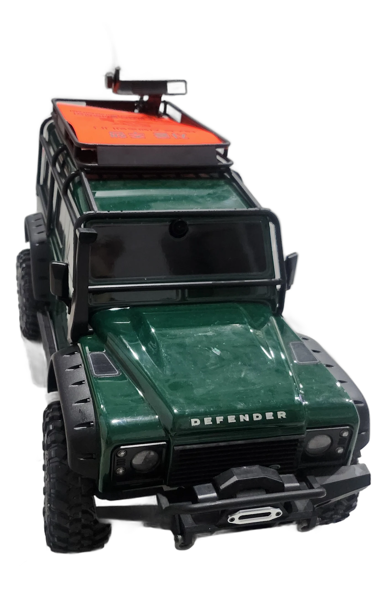
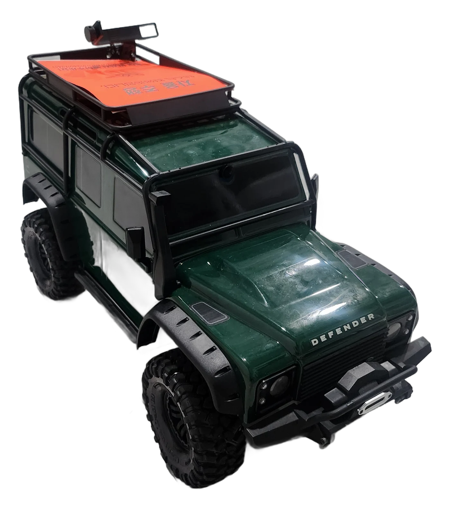
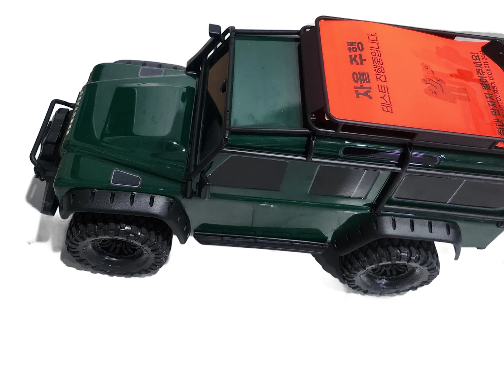
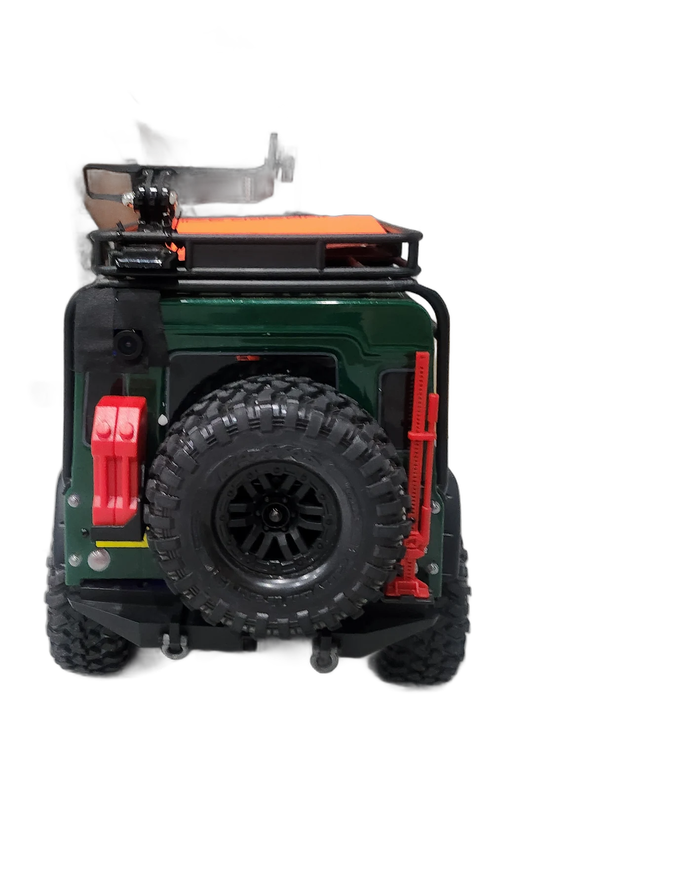
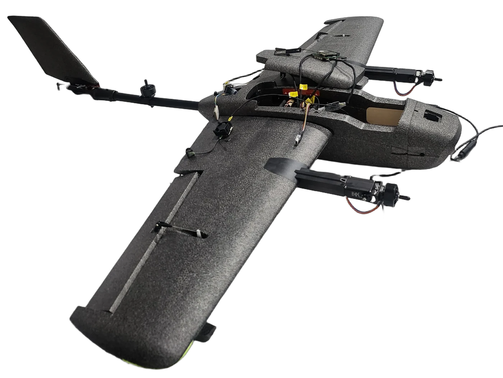
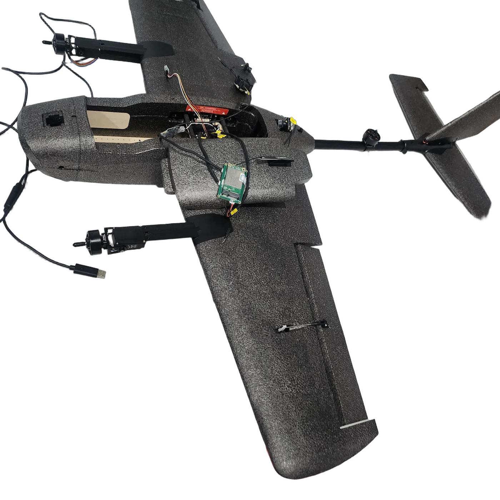

SUPPORTY는 하이브리드 통신(4G/5G ↔ Starlink) 위에서 한 명의 오퍼레이터가 지상·공중의 무인체계를 동시에 지휘하는 작전지속지원 통제 시스템입니다. 보급이 늦어 잃는 것은 시간이 아니라, 사람입니다.
카메라로 QR을 스캔하면 15페이지 기획서가 바로 열립니다. PC에서는 오른쪽 버튼으로 다운로드하세요.
현행 무인체계 운용은 장비가 늘수록 인력도 똑같이 늘어야 하는 선형 구조입니다. 병력이 줄어드는 한국과 APAC에서 이 구조는 지속 불가능하며 — 그 대가는 전장에서 가장 절박한 순간에 청구됩니다.
"그날, 6분이 없어서 다리를 잃은 사람이 있었다."— 우크라이나 전장 의용군 인터뷰 · 도보 지원조 도착 40분 소요, 차량 진입은 노출 위험으로 불가
부대의 긴급 보급·정찰 요청 수신
AI 코파일럿이 생명·시간 기준으로 우선순위 큐 정렬
다기능 자산(UGV/VTOL) 최적 배분 및 배송
조종 스틱이 아니라 목적을 말합니다. AI가 문장을 실제 제어 시퀀스로 즉시 번역합니다.
UGV가 이동하는 동안, 화면 전환 없이 항공 자산에 별도 명령을 큐잉합니다. 1인 다중 통제의 실제 구현입니다.
오퍼레이터의 명령보다 안전 조건을 먼저 검증합니다. 서두르다 놓치는 게 아니라, 정확한 판단으로 지킵니다.
생명 직결도 → 시간 민감도 → 임무 파급효과 순으로 시스템이 스스로 최적의 자산과 순서를 권고합니다. 통제관의 인지 과부하를 막습니다.
GNSS가 재밍으로 사라져도 비전 기반 항법(SPARC AI Overwatch)으로 즉시 전환합니다. 적이 GPS를 지워도, 우리의 항법은 삽니다.
통신 모듈을 탑재한 무인체계 자체가 즉각적인 인프라가 됩니다. 통신 두절 부대에 UGV(지상)·VTOL(공중) 중계 노드를 전개합니다.
4G/5G 셀룰러와 Starlink 위성망을 자동 전환하는 자체 통신 모듈 위에서, 공중 드론의 영상과 지상 차량의 전면 카메라 영상을 거리 제한 없이 실시간 동시 수신합니다. 시뮬레이션이 아니라, 수출·실증 이력이 있는 하드웨어입니다.
아래 영상 속 카메라 스트림과 GPS 좌표는 실물 하드웨어에서 실시간 전송된 데이터입니다.
AI 트리아지 우선순위(P1~P3)를 그대로 옮긴 대표 작전 시나리오입니다. 시나리오별 작전 영상을 순차 공개합니다.
상황 — 다리 부상 병사. UGV가 지혈대를 싣고 산길을 질주해 구출합니다.
상황 — 이동 중 소부대. VTOL이 선행 정찰로 매복을 미리 감지해 교전을 회피합니다.
상황 — 계곡에 고립돼 통신이 두절된 부대. UGV가 중계 모듈을 싣고 고지로 올라가 신호를 복구합니다.




4륜 오프로드 크롤러 · 전면 카메라 · G29 아날로그 정밀 조종 · RemoteX Cellular/Starlink Hot-standby 통신 모듈 탑재


무미익 고정익 + 트윈 붐 리프트 로터 · ArduPlane · SPARC AI Vision 통합 대기 · 노즈 카메라 · 고도 19M 실시간 영상 전송
Mission Queue 자동 우선순위, 듀얼 카메라 패널, 자연어 지휘 로그 — 심사 중 언제든 접속 가능합니다.
LIVE CONSOLE 열기 →특전사 9년 중사 전역. 무인항공기·무인차량 PMC 스타트업 운영. 통신 모듈 요르단·UAE 수출을 이끌었고, 현재 우크라이나 실증을 준비 중입니다.
해병대 병 2년 복무(해안 경계·KMEP 통역). SSAFY 14기 수료, SKALA 4기. 오퍼레이터 콘솔 기획·시나리오 설계와 프론트엔드를 담당합니다.